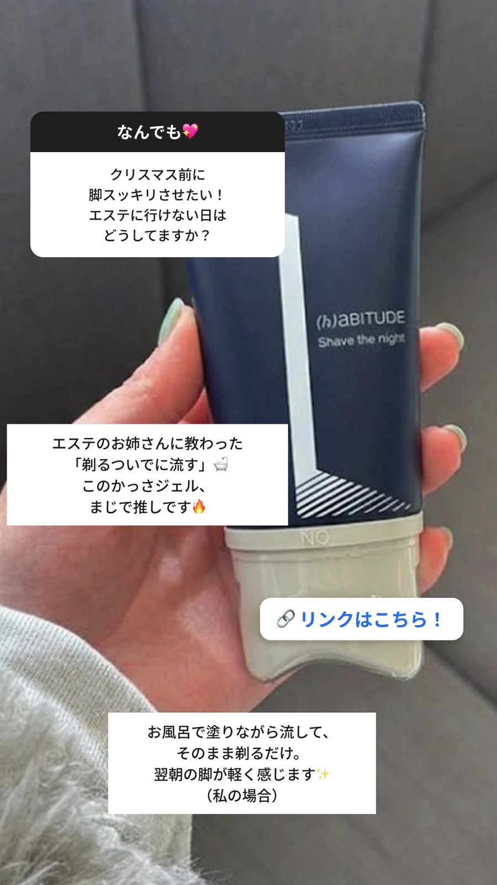

01에스테 언니 추천스토리
배경: 손에 든 제품 컷
질문クリスマス前に脚スッキリさせたい！エステに行けない日はどうしてますか？크리스마스 전에 다리를 산뜻하게 하고 싶어요! 에스테에 못 가는 날은 어떻게 하세요?
답변 1エステのお姉さんに教わった「剃るついでに流す」🛁 このかっさジェル、まじで推しです🔥에스테 언니한테 배운 「면도하는 김에 흘려보내기」. 이 괄사젤 진짜 추천해요
답변 2お風呂で塗りながら流して、そのまま剃るだけ。翌朝の脚が軽く感じます✨（私の場合）욕실에서 바르면서 쓸어주고 그대로 면도하면 끝. 다음 날 아침 다리가 가볍게 느껴져요 (제 경우)
링크 스티커🔗 リンクはこちら！링크는 여기!